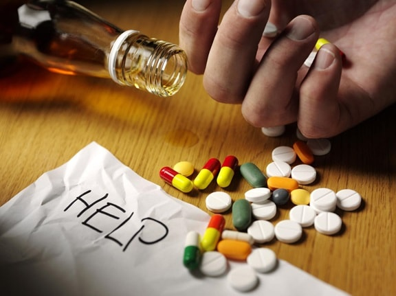

Substance Abuse and Rehabilitation
Substance abuse prevention is also known as "Drug Prevention". It is a process that attemps to prevent the onset of substance use or limit the development of problems associated with using psychoactive's substance.